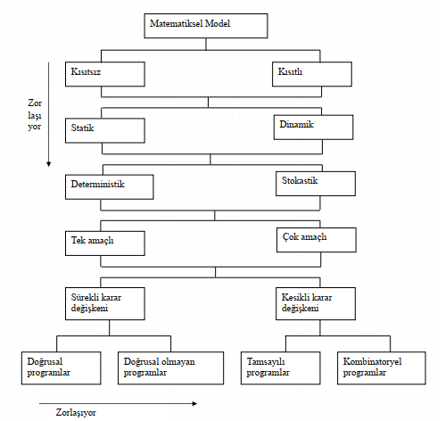

Hafta 02
Yöneylem Araştırması Nedir?
Doç. Dr. Erhan Çene
25/09/2025
Haftalık Ders Planı
Planlanan taslak haftalık plan aşağıdaki tabloda verilmiş olup nihai değildir. İhtiyaç halinde değiştirilmesi mümkündür.
| Hafta | Tarih | Konu |
|---|---|---|
| 1 | 18 Eylül 2025 Perşembe | Tanışma |
| 2 | 25 Eylül 2025 Perşembe | Yöneylem Araştırması Nedir? |
| 3 | 02 Ekim 2025 Perşembe | Ulaştırma Problemleri |
| 4 | 09 Ekim 2025 Perşembe | Ulaştırma Problemleri: Bozulma Durumu, Dengesiz Ulaştırma Prob. |
| 5 | 16 Ekim 2025 Perşembe | Ulaştırma Problemleri: Seçenekli Opt. Çözüm, Maksimum Amaçlı Ulaştırma Prob. |
| 6 | 23 Ekim 2025 Perşembe | Atama Problemleri |
| 7 | 30 Ekim 2025 Perşembe | Genel Tekrar ve Soru Çözümü |
| 8 | 06 Kasım 2025 Perşembe | VİZE |
| 9 | 13 Kasım 2025 Perşembe | Tamsayılı Programlama 1 |
| 10 | 20 Kasım 2025 Perşembe | Tamsayılı Programlama 2 |
| 11 | 27 Kasım 2025 Perşembe | Karar Kuramı 1 |
| 12 | 04 Aralık 2025 Perşembe | Karar Kuramı 2 |
| 13 | 11 Aralık 2025 Perşembe | Oyun Kuramı 1 |
| 14 | 18 Aralık 2025 Perşembe | Oyun Kuramı 2 |
| 15 | 25 Aralık 2025 Perşembe | Soru Çözümü ve Genel Değerlendirme |
Kaynak Kitaplar
- Ders notları, sınavlar için yeterlidir.
- TAHA, H. (2017), Yöneylem Araştırması, 6. Basımdan Çeviri, (Çeviren ve Uyarlayanlar: Ş. Alp Baray ve Şakir Esnaf), Literatür Yayınları:43, İstanbul.
- ÖZTÜRK, A. (2014), Yöneylem Araştırması, 15. Baskı, Ekin Yayınevi.
- WINSTON, Wayne L. (2004), Operations Research Applications and Algorithms, Fourth Edition, Thomson Learning, USA
- BRONSON, R. ve NAADIMUTHI, G. (1997), Schaum’s Outline of Operations Research, Second Edition, McGraw-Hill.
Yönetim Fonksiyonları
Yönetim Fonksiyonları
- Sanayi devrimi ile birlikte endüstri işletmelerinin hızla büyümeleri sonucunda bir kişinin bütün yöneticilik fonksiyonlarını tek başına yürütebilmesi imkansız hale gelmiştir.
- Bunun doğal sonucu olarak yönetim fonksiyonları ayrılmış, böylece işletme bünyesinde üretim, pazarlama, finansman vb. farklı bölümler ortaya çıkmıştır.
Çatışan Amaçlar
Çatışan Amaçlar
- Yönetim fonksiyonunun gittikçe artan sayıda bölümlere ayrılması, yeni işletme sorunlarını da beraberinde getirmiştir.
- Bir bölüm için en iyi olan davranış biçiminin bir başka bölüm için iyi olmak bir yana genellikle yıkıcı olması, bölümleri birbirlerinin amaç ve faaliyetlerini göz önünde bulundurmak zorunda bırakmıştır.
- Bu tip sorunlar ve bunlara daha iyi çözüm bulma yaklaşımları da yöneylem araştırmasını doğurmuştur.
Yöneylem Araştırmasının Tarihçesi
Yöneylem Araştırmasının Tarihçesi (1)
- Kayıtlı olan literatüre göre yönetim için bilimsel yaklaşım presipleri 1900’lü yılların başlarında Frederick Taylor tarafından ortaya konulmuştur.
- Günümüz yöneylem araştırmasında kullanılan bazı model ve tekniklerin kullanılması çok eskiye dayansa da, yöneylem araştırması adı verilen ilk faaliyetin II. Dünya Savaşı sırasında gerçekleştirildiği kabul edilmektedir.
Yöneylem Araştırmasının Tarihçesi
Yöneylem Araştırmasının Tarihçesi (2)
- İkinci Dünya Savaşı sırasında İngiltere askeri yönetimi, düşmanlarının hava akınları karşısında en iyi savunma şeklini belirlemek amacıyla farklı disiplinlerden bilim adamlarıyla bir ekip çalışması başlatmış ve böylece en iyi savunma şeklini bulmuştur.
- Bu çalışma için bir araya gelen bilim adamlarından yeni tip bombaların etkinliklerinin belirlenmesi ve radarların etkili biçimde kullanımlarının sağlanması problemlerini çözmeleri istenmiştir.
- Çözüm sonuçlarının uygulamada çok başarılı olması, savunma sisteminin diğer kesimlerinde; radar denetim politikaları, uçaksavar yangın kontrolü, konvoy büyüklüğü, düşman denizaltılarının yerlerinin saptanması gibi çeşitli askeri problemlerin çözümünde benzer ekiplerin oluşturulması sağlanmıştır.
Yöneylem Araştırmasının Tarihçesi
Yöneylem Araştırmasının Tarihçesi (3)
- İngiltere’de alınan başarılı sonuçlar müttefiklerin de dikkatini çekmiş, bu ülkeler de askeri problemlerini farklı disiplinlerden bilim adamlarıyla oluşturdukları ekipleriyle çözmeye girişmişlerdir
- Yöneylem araştırmasıyla İngiltere’den çok sonra tanışmış olmakla beraber, ABD’nin bu konudaki yoğun çabaları yöneylem araştırmasında önemli ilerlemeler kaydedilmesini sağlamıştır.
Yöneylem Araştırmasının Tarihçesi
Yöneylem Araştırmasının Tarihçesi (4)
- ABD hava kuvvetlerinin kurduğu ekibin üyelerinden birisi olan Dantzig, büyük organizasyonların gerçekleştirdikleri faaliyetlerin büyük bir bölümünün dağıtım problemi olarak ele alınabileceğini düşünmüştür.
- Ona göre en iyi plan-programa bir amaç fonksiyonunun en küçüklenmesi (minimizasyonu) ile ulaşılabilecektir.
- Dantzig, ayrıca doğrusal programlama problemlerinin klasik çözüm tekniği olan simpleks yöntemini önermiştir
Yöneylem Araştırmasının Tarihçesi
Yöneylem Araştırmasının Tarihçesi (5)
- Savaş sırasında, askeri problemlerin çözümü için oluşturulan ekiplerde aktif biçimde çalışan bilim adamları, savaş sonrasında dikkatlerini benzer yaklaşımın sivil yaşam problemlerine uygulanabilirliği üzerinde yoğunlaştırmışlardır:
- Üniversitelerine dönüp mevcut teknikler için sağlam temel oluşturma konusunda çalışanlar
- Yeni teknikler geliştirme çabasına girenler
- Özel ekonominin değişik kesimlerindeki çalışmalarına dönerek buralarda karşılaşılan problemleri benzer yaklaşımla çözmeye çalışanlar
- Bütün bu çalışmalar bilimsel bir uğraşı alanının yani Yöneylem Araştırması nın doğuşuna yol açmıştır
Yöneylem araştırmasının uygulanması
Yöneylem araştırmasının uygulanması (1)
- Yöneylem araştırmasını ilk uygulayan sivil kuruluşlar kar amaçlı büyük endüstriyel kuruluşlar olmuştur.
- Küçük boyutlu kuruluşlar, yöneylem araştırmasının yalnızca büyük işletmeler için değil, kendileri için de yararlı olduğunun farkına biraz geç varmışlardır
- Küçük şirketler ancak, araştırmacıların birbirlerinden farklı gibi görünmelerine karşın pek çok problemin stok, dağıtım, sıralama, kuyruk, oyun gibi belirli bir başlık altında incelenebileceklerini farketmeleri ve bunlar için standart çözüm teknikleri geliştirmelerinden çok sonra konuya ilgi göstermişlerdir.
Yöneylem araştırmasının uygulanması
Yöneylem araştırmasının uygulanması (2)
- Birkaç uygulama dışında yöneylem araştırmasının hizmet ağırlıklı endüstrilerde ve kamu kesiminde kullanılması 1960’lı yılların ortalarında gerçekleşmiştir.
- Bugün, banka, kütüphane, hastane, otel, okul gibi hizmet ağırlıklı pek çok kuruluş hizmet verme etkinliğini artırmada yöneylem araştırmasından büyük yarar sağlamaktadır.
- Devlet kuruluşları da plan, program ve politika belirleme çalışmalarında yöneylem araştırmasını yaygın bir biçimde kullanmaktadırlar.
- Yöneylem araştırmasının çok geniş bir uygulama alanı bulması ve çok hızlı bir gelişme göstermesindeki en önemli faktör bilgisayar teknolojisindeki gelişme olmuştur.
İlk yöneylem araştırması kuruluşu
İlk yöneylem araştırması kuruluşu
- Yöneylem araştırması alanında çalışan bilimadamlarının ihtiyaçlarını karşılamak amacıyla kurulan ilk yöneylem araştırması kuruluşu, 1952 yılında ABD’de kurulan ORSA (The Operational Research Society of America) olmuştur.
- Türkiye’de yöneylem araştırması çalışmalarının batıdan çok sonra başladığı bilinmektedir.
- Ülkemizde de ilk yöneylem araştırması çalışmaları batıda olduğu gibi savunma kesiminde başlamıştır.
- Savunma kesimi dışında ilk yöneylem araştırması ekibi 1965 yılında Türkiye Bilimsel ve Teknik Araştırma Kurumu (TÜBİTAK) bünyesinde kurulmuştur.
Yöneylem araştırmasının tanımı
Yöneylem araştırmasının tanımı (1)
- Yöneylem araştırması, sistemlerin performansını optimize etmek için teknikler kullanan bir bilim dalıdır.
- Yöneylem araştırması, bir sistemde ortaya çıkan problemlere, sistemin denetlenebilir elemanları cinsinden bilimsel yöntem, teknik ve araçların uygulanmasıyla en iyi çözümün bulunmasıdır.
- Yöneylem araştırması, insan, makina, para ve malzemeden oluşan endüstriyel, ticari, resmive askeri sistemlerde yönetimlerde karşılaşılan problemlere bilimsel yaklaşımdır.
Yöneylem araştırmasının tanımı
Yöneylem araştırmasının tanımı (2)
- Amacı, yönetime politika ve faaliyetlerini bilimsel olarak belirlemede yardımcı olmaktır.
- Yöneylem araştırması, mevcut imkanlardan en büyük faydayı sağlamak için girişilen bilimsel yaklaşmalar ve teknikler cümlesidir.
- Yöneylem araştırmasının ana konusu, herhangi bir sistemin karmaşık operasyonlarını anlamak ve performansını iyileştirmek için bilimsel karar verme yöntemleridir.
Yöneylem araştırmasının temel özellikleri
Yöneylem araştırmasının temel özellikleri
1. Sistem yaklaşımını kullanması: Yöneylem araştırması problemi çözerken, o problemin ait olduğu organizasyonun bütün unsurlarını, çevresini ve aralarındaki etkileşimi göz önünde bulundurur.
2. Disiplinlerarası bir yaklaşım olması: Problemin modellenmesinde ve çözümünde farklı bakış açılarından faydalanabilmek için problemlerin disiplinlerarası bir ekip tarafından incelenmesi gerekir.
3. Bilimsel yöntemler kullanması: Yöneylem araştırması problemi tanımlar, modeller, çözer, sonuçları test eder ve uygular.
Yöneylem araştırmasının metodolojisi (1)
İyi bir YA uygulamasının altı basamağı
1) Problemin Tanımlanması
2) Sistemin Gözlenmesi
3) Problemin Matematiksel Modelinin Geliştirilmesi
4) Modelin Çözülmesi
5) Modelin Geçerliliğinin Gösterilmesi
6) Çözümün Uygulanması ve Yorumlanması
Problemin Tanımlanması
Problemin Tanımlanması (1)
- Amaçlar nelerdir?
- Problem çok dar kapsamlı mı ele alındı?
- Problem çok geniş kapsamlı mı ele alındı?
Problemin Tanımlanması
Problemin Tanımlanması (2)
- Mümkün seçenekler arasından bir faaliyet veya faaliyetler dizisinin benimsenmesine karar denir.
- Alternatif stratejiler arasından en uygun olanını seçme konusunda karar verme yetkisine sahip birey ya da topluluğa verilen genel isme karar verici denir.
- Karar vericinin ulaşmak istediği bir amacının olması, bu amaca ulaşmada izlenebilecek alternatif stratejilerin bulunması ve alternatifler içinden hangisinin amacı gerçekleştirebileceği konusunda kuşku içinde bulunulması gerekmektedir.
- Ancak bu koşullar sağlandığında bir problem vardır denir.
Sistemin Gözlenmesi
Sistemin Gözlenmesi (1)
- Hangi veriler toplanmalı?
- Veriler nasıl toplanmalı?
- Sistemin farklı parçaları birbirleriyle nasıl etkileşmektedir?
Sistemin Gözlenmesi
Sistemin Gözlenmesi (2)
- Sistem gözlemlenir ve probleme etki eden parametreler tahmin edilmeye çalışılır.
- Bu amaçla veri derlenmesi, bu adımın çok önemli bir kısmını oluşturur.
- Tahmin değerleri sabit sayılar olarak işleme tabi tutulurlar ve matematiksel modelin geliştirilmesinde kullanılırlar.
- Problem elemanlarının duruma en uygun biçimde belirlenebilmesi için sistem yaklaşımı kullanılır.
Sistem Nedir?
Sistem Nedir?
- Bir sınır içerisinde, birbirleriyle etkileşim içinde bulunan ve ortak bir amaca yönelmiş olan öğeler topluluğuna sistem denir.
- Sistem, girdileri çıktılara dönüştüren birbirleriyle ilişkili faaliyetlerden ve öğelerden (elemanlardan) oluşmaktadır.
- Sistemin çok sayıda girdisi ve çıktısı olabilir.
Problemin Matematiksel Modelinin Geliştirilmesi
Problemin Matematiksel Modelinin Geliştirilmesi (1)
- Hangi tür model kullanılmalı?
- Model, problemi tam olarak ifade ediyor mu?
- Model çok mu karmaşık?
Problemin Matematiksel Modelinin Geliştirilmesi
Problemin Matematiksel Modelinin Geliştirilmesi (2)
- Problemin kolayca çözülebilecek bir yapıya oturtulması gerekmektedir.
- Model nedir?
- Bir sistemin değişen koşullar altındaki davranışlarını incelemek, kontrol etmek ve geleceği hakkında varsayımlarda bulunmak amacıyla elemanları arasındaki bağlantıları kelimeler veya matematiksek terimlerle belirleyen ifadeler topluluğuna model denir.
Problemin Matematiksel Modelinin Geliştirilmesi
Problemin Matematiksel Model Şeması
Problemin Matematiksel Modelinin Geliştirilmesi
Problemin Matematiksel Modelinin Geliştirilmesi (3)
- Her modelin kuruluş amacı, belirli bir ekonomik sistemi yönetmekle görevli kişi veya kişilere (karar vericiye) mümkün karar seçeneklerini sunmak, bunların sonuçlarını belirlemek ve karşılaştırmalar yapmaktır.
- Yöneylem araştırmasının karar vermeye en önemli katkısı matematiksel modellerdir.
- Bir sistemin davranışlarıyla ilgili kuralların matematiksel olarak ifade edilmesiyle matematiksel modeller kurulur.
Problemin Matematiksel Modelinin Geliştirilmesi
Problemin Matematiksel Modelinin Geliştirilmesi (4)
- Eğer ele alınan sistem matematiksel modellerle çözülemeyecek kadar karmaşık bir yapıya sahipse sistemin bir simülasyon modeli kurulur.
- Simülasyon, bir sistemin tüm çalışma zamanı boyunca davranış şeklinin bilgisayar ortamında taklit edilmesidir.
Problemin Matematiksel Modelinin Geliştirilmesi
Matematiksel modellerin elemanları (1)
- Ekonomik sistemlerin matematiksel modellerinde kullanılan elemanlarını üç ana grupta toplamak mümkündür:
- Amaç fonksiyonu
- Karar değişkenleri
- Kısıtlar
Problemin Matematiksel Modelinin Geliştirilmesi
Matematiksel modellerin elemanları (2)
- Bir karar verme durumunda ilgilenilen sistem dikkatli bir şekilde gözlemlenir ve değerleri kontrol edilebilen ve sistemin performansını etkileyen parametreler belirlenir.
- Bu parametreler yöneticilerin kontrolü altındadır ve karar değişkenleri olarak tanımlanırlar. Bir üretim sisteminde farklı ürünlerin üretilecek miktarları, bir yerden başka yere taşınacak ürün miktarı, işçi sayısı, makina sayısı vb
- Karar değişkenlerinin amaç üzerindeki etkilerinin analitik olarak gösterilmesiyle amaç fonksiyonu oluşturulur
- Kısıtlar, sistemin içinde bulunduğu koşullardan kaynaklanmaktadır (talep kısıtları, kapasite kısıtları gibi)
Modelin Çözülmesi
Modelin Çözülmesi (1)
En uygun çözüm tekniği nedir?
- Analitik çözüm
- Algoritmalar
- Simülasyon
- Sezgisel
Modelin Çözülmesi
Modelin Çözülmesi (2)
- Analitik çözüm: Problemin Lagrange çarpanları, diferansiyel ve integral hesapları ile koşullu en iyi çözümünün bulunmasıdır. Analitik çözümde sadece matematiğin değil iktisat teorisinin de temel kuralları kullanılır.
- Algoritma çözümü: Analitik çözüm bazen çok zor veya imkansız olabilir. Belirli bir sıra içerisinde gerçekleştirilen matematiksel ve mantıksal işlemler kümesine algoritma denir. Yinelemeli olarak uygulanan algoritmalar her adımda optimuma daha yakın bir çözüme doğru ilerler.
Modelin Çözülmesi
Modelin Çözülmesi (3)
- Simülasyon çözümü: Problem, analitik olarak veya algoritmalarla çözülemiyorsa kullanılır. Sistemin davranış şekli bilgisayar ortamında taklit edilir.
- Sezgisel çözüm: Problem optimum çözümü bulunamayacak kadar karmaşıksa, sezgisel yöntemler sezgiye veya bazı deneysel kayıtlara dayanan karar kuralları ile belirli sayıda adımdan sonra en iyi olmasa da tatminkar bir sonuç verirler.
Modelin Geçerliliğinin Gösterilmesi
Modelin Geçerliliğinin Gösterilmesi (1)
- Modelden elde edilen çıktılar sistemin kendisinden elde edilen çıktılarla uyuşuyor mu?
- Modelden elde edilen çıktılar mantıklı mı?
- Model hatalı olabilir mi?
Modelin Geçerliliğinin Gösterilmesi
Modelin Geçerliliğinin Gösterilmesi (2)
- Modelden elde edilen çözümü uygulamaya koymadan önce gerçeğe uygunluğunun kanıtlanması gerekir.
- Eğer çözüm sistemin geçmiş dönem sonuçlarını aynen veya daha olumlu bir şekilde sağlıyorsa, modelin geçerli olduğu kabul edilir.
- Eğer sistemin geçmiş dönem sonuçları yoksa simülasyondan yararlanılır.
- Model geçerliliğinin kanıtlanmasında bir başka yol olarak da sistemdeki deneyimli kişilerin görüşlerine başvurulabilir.
Çözümün Uygulanması ve Yorumlanması
Çözümün Uygulanması ve Yorumlanması (1)
- Yöneylem araştırması ekibi, uygulama sürecini açıklamalı ve uygulamada yardımcı olmalıdır.
- Uygulamanın nasıl yapılacağı bir rapor halinde yönetime sunulmalıdır.
Başarılı Yöneylem Araştırması Uygulamaları
Başarılı Yöneylem Araştırması Uygulamaları
| Şirket | Yıl | Problem | Kullanılan Teknik | Yıllık Tasarruf |
|---|---|---|---|---|
| Hewlett Packard | 1998 | Üretim hattında ara stok tasarımı | Kuyruk Modelleri | $280 million |
| Taco Bell | 1998 | İşgücü çizelgelemesi | Tamsayılı Programlama, Tahmin, Simülasyon | $13 million |
| Proctor & Gamble | 1997 | Üretim ve dağıtım sisteminin yeniden tasarlanması | Ulaştırma Modelleri | $200 million |
| Delta Airlines | 1994 | Uçakların rotalara atanması | Tamsayılı Programlama | $100 million |
| AT&T | 1993 | Çağrı merkezi tasarımı | Kuyruk Modelleri, Simülasyon | $750 million |
| Yellow Freight Systems, Inc. | 1992 | Nakliye şebekelerinin tasarımı | Şebeke Modelleri, Tahmin, Simülasyon | $11.3 million |
| San Francisco Police Dept. | 1989 | Devriye çizelgeleme | Doğrusal Programlama | $11 million |
Başarılı Yöneylem Araştırması Uygulamaları
Başarılı Yöneylem Araştırması Uygulamaları
| Şirket | Yıl | Problem | Kullanılan Teknik | Yıllık Tasarruf |
|---|---|---|---|---|
| Bethlehem Steel | 1989 | Külçe kalıbı tasarımı | Tamsayılı Programlama | $8 million |
| North American Van Lines | 1988 | Yükleri şöförlere atamak | Şebeke Modelleme | $2.5 million |
| Citgo Petroleum | 1987 | Rafineri operasyonları & dağıtım | Doğrusal Programlama, Tahmin | $70 million |
| United Airlines | 1986 | Rezervasyon personelinin çizelgelenmesi | Doğrusal Programlama, Kuyruk, Tahmin | $6 million |
| Dairyman’s Creamery | 1985 | Optimum üretim seviyeleri | Doğrusal Programlama | $48,000 |
| Phillips Petroleum | 1983 | Ekipman yenileme | Şebeke Modelleme | $90,000 |
Matematiksel model türleri
Matematiksel model türleri (1)
- Yöneylem araştırmasında karşılaşılabilecek matematiksel model türleri, ilgilenilen karar probleminin yapısına göre şekillenir.

Matematiksel model türleri
Matematiksel model türleri (2)
- Eğer karar değişkenleri üzerinde hiçbir sınırlama yoksa kısıtsız modeller ortaya çıkar, en azından bir sınırlama olması kısıtlı modelleri ortaya çıkarır.
- Gerçek hayatta genellikle kısıtlı problemler karşımıza çıkar.
- Eğer problem tek bir dönem için çözülecekse statik model, birden fazla dönem göz önüne alınarak çözülecekse dinamik model ortaya çıkar.
- Eğer birden fazla amaç varsa çok amaçlı problemler ortaya çıkar.
Matematiksel model türleri
Matematiksel model türleri (3)
- Eğer tüm karar değişkenleri pozitif reel (gerçel) değerler alıyorsa sürekli optimizasyon problemi söz konusudur
- Tüm karar değişkenlerinin tamsayı değerler alması gerekiyorsa kesikli optimizasyon problemi ortaya çıkar
- Bazı karar değişkenlerinin reel, bazılarının tamsayı değer alması durumunda ise karışık kesikli optimizasyon problemi ile karşılaşırız.
- Eğer karar değişkenlerinin kombinatoryal seçenekleri söz konusuysa kombinatoryal optimizasyon problemleri ortaya çıkar.
Matematiksel model türleri
Matematiksel model türlerine göre kullanılan çözüm yaklaşımları (1)
- Dinamik modeller için kullanılan yaklaşım dinamik programlamadır.
- Eğer optimize edilecek birden fazla amaç varsa genellikle kullanılan yaklaşım hedef programlamadır.
- Modeldeki tüm fonksiyonların doğrusal olması durumunda sürekli optimizasyon problemleri doğrusal programlama yöntemi ile çözülür. Sürekli optimizasyon modelinde en azından bir fonksiyonun doğrusal olmaması durumundaysa doğrusal olmayan programlama yöntemi kullanılır.
Matematiksel model türleri
Matematiksel model türlerine göre kullanılan çözüm yaklaşımları (2)
- Eğer kesikli optimizasyon problemlerinde karar değişkenleri herhangi bir tamsayı değer alıyorsa tamsayılı programlama yöntemi kullanılır.
- Kombinatoryal optimizasyon problemlerinin belirli bir boyuta kadar olanı tamsayılı programlama yöntemi ile çözülürken, orta ve büyük boyutlu problemlerin sezgisel yöntemlerle çözülmesi gerekmektedir.

IST215 - Yöneylem Araştırması 1 - Hafta 02 - 25 Eylül 2025 - Doç. Dr. Erhan Çene - erhan.cene@ticaret.edu.tr